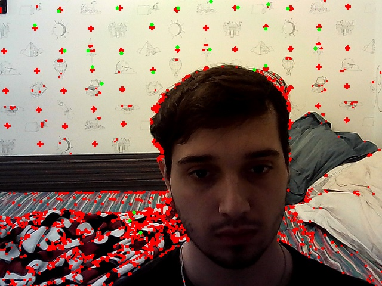
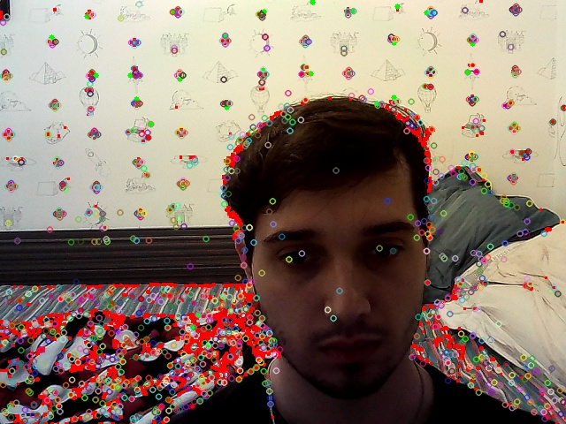
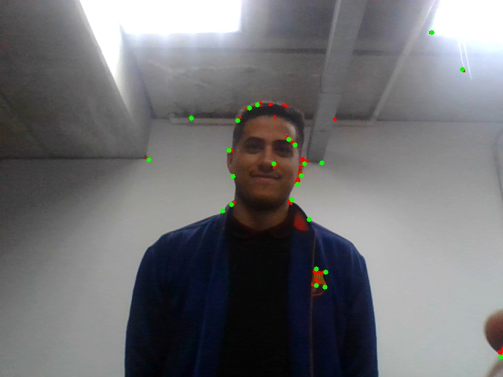
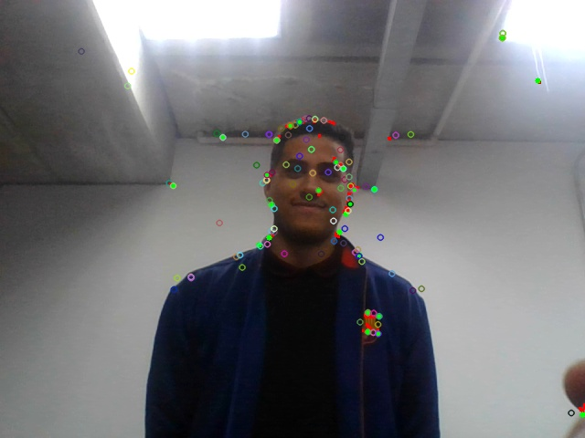
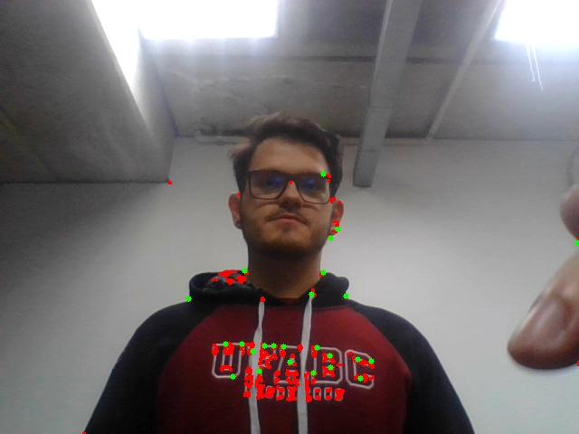
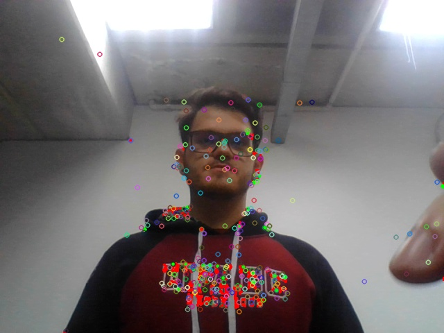
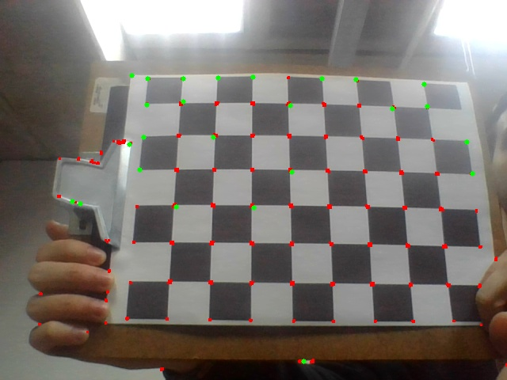

4. Resultados e Análises:
- O programa deve realizar a detecção de objetos e apresentar na tela. Obs.: escolha cores contrastantes na identificação.
- Faça mais de uma versão do programa, sendo pelo menos uma versão com modelos XML Haarcascade dos exercícios acima, e outra versão com modelo XML Haarcascade que não foi usado nos exercícios.
- O programa também deve salvar as imagens com identificação dos Objetos, ao toque de uma tecla.
(1) Desenvolva programas para fazer a leitura de sua imagem geral dos membros da equipe e da imagem com avatares.
Resultado:

(2) Outro programa modificando o item (1), agora fazendo a leitura de imagem da webcam. Neste caso, o programa deve adicionalmente mostrar uma janela ao vivo com a imagem e o resultado da imagem de rastreamento. programa lab6d.py
Este código em Python utiliza a biblioteca OpenCV para realizar a detecção de características em tempo real a partir da webcam. Ele inclui três métodos de detecção: Harris Corner Detection, Good Features to Track e Scale-Invariant Feature Transform (SIFT). O programa captura os frames da webcam e exibe-os em uma janela, juntamente com as detecções de características aplicadas a cada frame. Quando a tecla 'c' é pressionada, as imagens resultantes de cada detecção são armazenadas em arquivos separados. O código permite visualizar e capturar imagens com os resultados das detecções em tempo real, fornecendo uma base para aplicações que envolvem visão computacional e processamento de imagens.
import cv2
import numpy as np
def detect_harris_corners(image):
gray = cv2.cvtColor(image, cv2.COLOR_BGR2GRAY)
gray = np.float32(gray)
dst = cv2.cornerHarris(gray, 2, 3, 0.04)
dst = cv2.dilate(dst, None)
ret, dst = cv2.threshold(dst, 0.01 * dst.max(), 255, 0)
dst = cv2.convertScaleAbs(dst)
image[dst > 0.01 * dst.max()] = [0, 0, 255]
return image
def detect_good_features(image):
gray = cv2.cvtColor(image, cv2.COLOR_BGR2GRAY)
corners = cv2.goodFeaturesToTrack(gray, 25, 0.01, 10)
corners = np.int0(corners)
for corner in corners:
x, y = corner.ravel()
cv2.circle(image, (x, y), 3, (0, 255, 0), -1)
return image
def detect_sift_features(image):
gray = cv2.cvtColor(image, cv2.COLOR_BGR2GRAY)
sift = cv2.SIFT_create()
keypoints = sift.detect(gray, None)
image = cv2.drawKeypoints(image, keypoints, None)
return image
# Inicializar a webcam
cap = cv2.VideoCapture(0)
# Variáveis para armazenar as imagens capturadas
captured_image_harris = None
captured_image_good = None
captured_image_sift = None
while True:
# Capturar o frame da webcam
ret, frame = cap.read()
# Verificar se a captura de vídeo foi bem-sucedida
if not ret:
break
# Realizar detecção de Harris corners no frame
harris_corners_frame = detect_harris_corners(frame)
# Realizar detecção de Good features no frame
good_features_frame = detect_good_features(frame)
# Realizar detecção de SIFT features no frame
sift_features_frame = detect_sift_features(frame)
# Exibir o frame capturado e o resultado da detecção em uma janela
cv2.imshow("Detecção de Características", np.hstack((frame, harris_corners_frame, good_features_frame, sift_features_frame)))
# Verificar se a tecla 'q' foi pressionada para encerrar o programa
key = cv2.waitKey(1)
if key & 0xFF == ord('q'):
break
# Verificar se a tecla 'c' foi pressionada para capturar as imagens da webcam
elif key & 0xFF == ord('c'):
captured_image_harris = harris_corners_frame.copy()
captured_image_good = good_features_frame.copy()
captured_image_sift = sift_features_frame.copy()
print("Imagens capturadas!")
# Liberar os recursos utilizados
cap.release()
cv2.destroyAllWindows()
# Salvar as imagens capturadas, se houver
if captured_image_harris is not None:
cv2.imwrite("imagem_harris.jpg", captured_image_harris)
if captured_image_good is not None:
cv2.imwrite("imagem_good.jpg", captured_image_good)
if captured_image_sift is not None:
cv2.imwrite("imagem_sift.jpg", captured_image_sift)
Resultado:
Gabriel
 Micael
 Joao
 Tabuleiro
